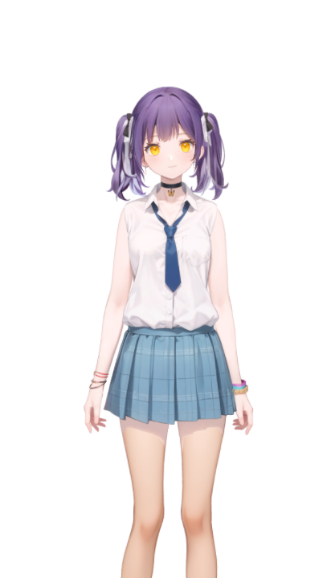

21:485G 92%
今晚一起看
欧冠 · 安菲尔德 · 正在进行
利物浦LIVE切尔西
连接稳定
GOAL · 76'

球球
这脚处理太冷静了。切尔西现在得把阵线往前提，不然时间真不够了。
球球在听
「刚才谁助攻？」
松开后立即发送，也可以随时打断。
陪看设置
连续对话一句接一句，不用反复按住
显示字幕语音失败时仍保留文字
话痨程度正常 · 重要时刻会主动说5
支持球队利物浦修改
网络刚刚中断，比赛画面仍保留。
欧冠 · 安菲尔德 · 正在进行

这脚处理太冷静了。切尔西现在得把阵线往前提，不然时间真不够了。
「刚才谁助攻？」
松开后立即发送，也可以随时打断。